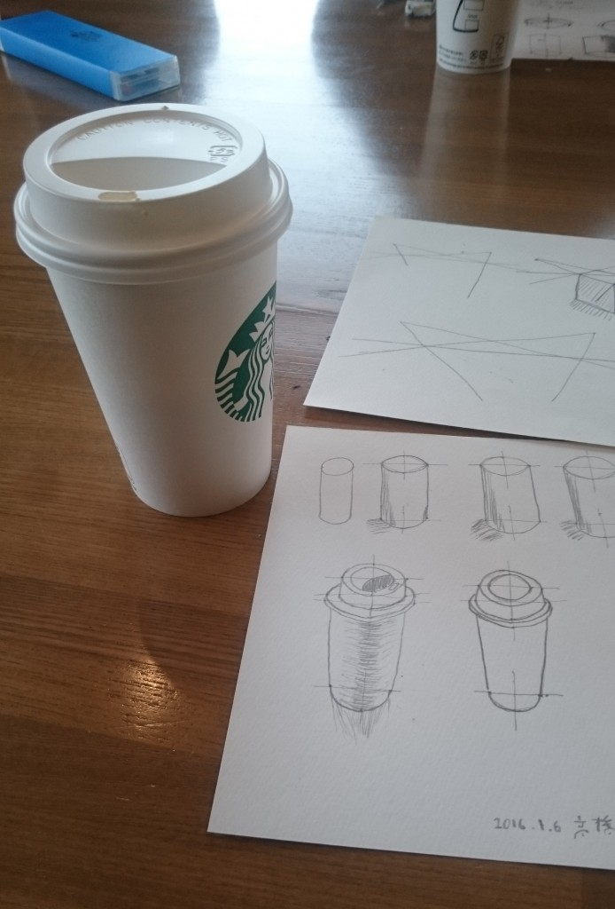
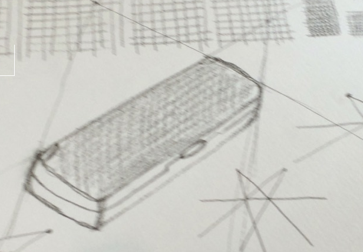

News
-
shirai wrote a new post, 多重化技術「ExField」を発表, on the site Shirai Lab 4年 3か月前
2016年2月19日付、 神奈川工科大学および株式会社富士通ソーシアルサイエンスラボラリより共同プレスリリースを発信いたします。
神奈川工科大学が “どこから見ても正面に見える”
広告向けディスプレイ技術を開発 ‐‐ ARや多言語表示に期待
～ 富士通SSLと実用化に向けた共同研究を推進 ～神奈川工科大学情報学部情報メディア学科の谷中一寿教授、白井暁彦准教授らはこのたび、映像を複数の視点[…]

-
shirai wrote a new post, 虚構新聞が多重化技術を紹介、あわや「誤報」に。, on the site Shirai Lab 4年 4か月前
アインシュタインがその存在を予言した「重力波」が100年の時を超えて現実に観測された2016年2月12日、虚構報道界の大手メディアである「虚構新聞」が多重化技術を使ったニュース番組を虚構として報道し、あわや「誤報」となる事態に。
■テレビ報道の中立性、２色化で対応 「停波」発言受け
民間放送各社は、ニュース番組の報道内容が政府見解と異なる場合、テロップを赤と青の２色で重ね合わせて同時に放送する「２色テロ[…]

-
sakakibara wrote a new post, はじめに, on the site R-Diary 4年 4か月前
このブログは
神奈川工科大学情報学部情報メディア学科白井研究室所属の榊原 諒が日々の活動を文章化し、指導教員に報告することを目的としています。
主にe-sports関係や、これからの卒業研究や就職活動に向けて執筆していく予定なので、よければご覧になってください。
就職活動は4月の頭に終了致しました。
今後は研究活動について執筆していく予定です。
私の Facebook
-
sakakibara wrote a new post, LJL2016 Report 2, on the site R-Diary 4年 4か月前
現在開催中のLJL2016 公式ページはこちら[…]
-
sakakibara wrote a new post, LJL2016開幕戦レポート, on the site R-Diary 4年 4か月前
1323101[…]
-
shirai wrote a new post, 2016/3/1研究成果発表会「エンタテイメントシステム工学研究会」開催, on the site Shirai Lab 4年 4か月前
平素は、格別のお引き立てを賜りありがとうございます。
さて、この度、白井研究室の科研費研究成果発表と共同研究を行っている企業の取り組みを紹介する研究会「エン[…] -
s1323150 wrote a new post, 後期セミナー最終レポート, on the site 白井研セミナー 4年 4か月前
はじめに
後期セミナーにおいて、私が学んだ事をレポートにしました。
この授業は、毎回違う内容を学ぶ授業でした。内容は就職活動や学生生活のためになるものでした。ですが毎回共通するものもありました。文章を書くことです。文章は今後卒業論文を初めとする学業や、社会でのメールのやり取りや、報告書で使う重要なものです。この文章力は、とにかく沢山書きそれを校正することで身に付けられます。
第1回
「自己紹介」[…]
-
fmao wrote a new post, グローバルゲームジャム（GGJ2016）に参加してきました！, on the site fmaoのサイト 4年 4か月前
GGJ東京工科大学会場に参加して来ました。
去年のGGJ、福島ゲームジャム、そして今回のGGJと、JAMは3回目の参加になります。
これらを通して学んだのは、チームになったらとにかく仲良くなろうということでしょうか。
さて、今回のGGJはプランナーとしての参加になりました。
というのも、自分を含めプログラマー5人、グラフィッカーが2D・3Dで1人ずつ、そしてサウンドが1人と、プランナーがいなかったのでそ[…]
-
fujikura wrote a new post, GGJの感想, on the site fujikuraのブログ 4年 4か月前
ＧＧＪで2日間ぶっ通しでゲームを作ってきました。
チームの殆どの方が初参加という事でとても大変でしたが無事ゲームを完成させることが出来てよかったと思いますし、とても良い経験になったと思います。
反省点は、チーム全体で自然と役割分担が出来ていたが、もっと明示的に役割を分担させるべきだったと思いました。理由としては出来る人ができる事だけをしていても、仕事が出来ない人に合わせることが出来ないので、時間が無駄になってしまっ[…]
-
Ryotaro Tsuda wrote a new post, [GGJTUT2016]ベターでベタなベタのゲームを作った(チームβ), on the site 汗を流して飯が旨い 4年 4か月前
GGJ@TUTに参加してきました
今年のテーマは「RITUAL」
【名詞】
1[集合的には 【不可算名詞】] (しばしば同じ形式で繰り返される)儀式，礼拝式，(儀式的)行事.
用例
Christian ritual(s) キリスト教の儀[…]
-
Ryotaro Tsuda wrote a new post, グラフとかで数値に差があるときに使う波線(省略線)を作る．, on the site 汗を流して飯が旨い 4年 4か月前
元気に卒論執筆中 津田です．
ものすごくしょうもないんですが，グラフの数値に差があるときの波線(省略線というらしいです)をグラフからとかではなく，画像として作って貼り付けたい場合ってありますよね？
私も卒論のパワポスライドを作っている際に，ロードマップを書いていて，年代に大きな差があったため画像で必要になりました．
まあすぐ解決するだろうと思ったら，思いのほか苦戦したので，いるかわかりませんがこれ以上被害者を増やさないた[…]
-
sakakibara wrote a new post, 第13回 1323101 榊原諒 ／続:スケッチ教室, on the site 白井研セミナー 4年 4か月前
1323101 榊原 諒です。 […]
-
sakakibara wrote a new post, LJL2016開幕戦レポート, on the site 白井研セミナー 4年 4か月前
1323101[…]

-
s1323150 wrote a new post, 第12回 スケッチ教室, on the site 白井研セミナー 4年 5か月前
こんにちは
高橋弘樹です。
あけましておめでとうございます。
遅くなりましたが第12回目のセミナーです。
今回のセミナーは、スターバックスで白井先生にコーヒーをご馳走になりながら行いました。
今回はスケッチの基礎の学習です。
スケッチはクリエイティブの基本のようなものらしいです。
なぜなら、自分の頭の中にあるアイディアを外部にアウトプットする時に手っ取り早いからです。
例えば、 […] 
-
fujikura wrote a new post, 本日の勉強内容, on the site fujikuraのブログ 4年 5か月前
1.Googleカレンダーの使用方法
2.GoogleMailの利用方法
3.ブログの投稿方法
4.IFTTTの利用方法
5.Simフリーについて
6.ごみ捨て
7.GoogleDriveの利用方法
-
fujikura wrote a new post, テスト投稿, on the site fujikuraのブログ 4年 5か月前
本文
1.テスト投稿等タイトルを書く
2.本文に本文を書く
3.パーマメントをアルファベットに変更
4.本文に画像を表示
5.右下のアイキャッチ画像を追加
6.カテゴリタグを設定
7.

-
sakakibara さんのプロフィールが更新されました。 4年 5か月前
-
sakakibara wrote a new post, 第12回 1323101 榊原諒 ／ スタバでスケッチ, on the site 白井研セミナー 4年 5か月前
あけましておめでとうございます。
1323101 榊原諒です。新年一回目のセミナーでは
スターバックス厚木及川店でスケッチの勉強をしました。まずは色の塗り方と立体の書き方です。
色の塗り方は油断するとチェック模様みたいになってしまいます…。書いてみるとなかなかきれいな立体を書くのはむずかしかったです。
次に円柱の書き方をやりました。
なぜ円柱かというと
このコーヒーカッ […]  -
kai wrote a new post, 今思った事, on the site Kai's Develope Diary 4年 5か月前
[…]
-
Ryotaro Tsuda wrote a new post, 2015年うまかったもんを振り返る, on the site 汗を流して飯が旨い 4年 5か月前
2015年に食べたうまかったもんを振り返ってみました．
2014年はこちら
審査基準2015年1/1-12/31で食べたもの
実際に口にしたもののみ
今写真を見てその味を思い出すことが出来るか
あとは独断と偏見大学にて 内定祝いに頂いたケーキ
札幌 根室エスカロップ
札幌 北海道で食べた魚
札幌 ジンギスカン
札幌 北海道ついた瞬間買ったカツゲン
吉祥寺 シャッターズ グラタンとトー[…]
- もっと読み込む